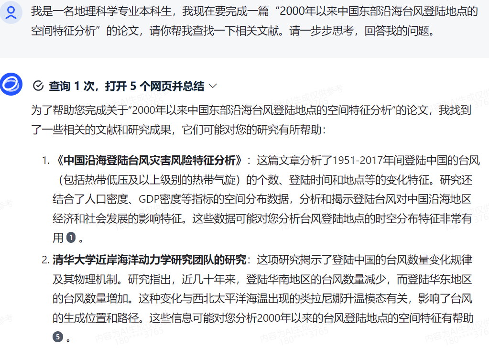
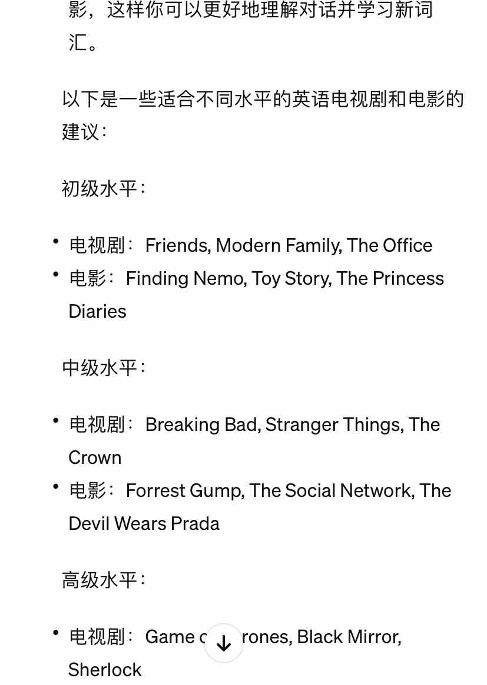

目录：
（点击可快速跳转到所需板块）一、前言
二、基本概念
三、常用工具指南
1.工具
2.使用方法
3.注意事项
4.关键词的输入
四、实用案例分析
1.学习辅助
2.信息检索与分析
3.语言学习
4.编程辅助
五、结语
一、前言
（跳转回目录）2022年ChatGPT发布，并以其区别于众多人工智障的人性化的对答如流引起了社会的广泛关注。网络平台上也出现了许 多人们与GPT的有趣问答。那么，关于这个突显人工智能进一步发展的产品，你了解多少呢？
ChatGPT实际上是一种大语言模型。近年来大语言模型迅速发展，标志着人类的科技角逐进入崭新的绚烂时代。2022年，美国旧金 山人工智能研究公司Open AI发布ChatGPT模型用于生成自然语言文本。2023年2月，谷歌发布会公布了聊天机器人Bard，它由谷歌的大语言模型LaMDA驱动。 我国在这方面的科技发展也紧跟其后。2023年2月7日，百度正式宣布将推出文心一言，3月16日正式上线。文心一言的底层技术基础 为文心大模型，底层逻辑是通过百度智能云提供服务，吸引企业和机构客户使用API和基础设施，共同搭建AI模型、开发应用，实现 产业AI普惠。2023年3月15日，Open AI又发布了多模态预训练大模型GPT4.0。2023年4月13日，亚马逊云服务部门在官方博客宣布推出Bedrock生成式人工智能服务，以 及自有的大语言模型Titan。
随着人工智能的浪潮席卷而来，关于“我们是否会被AI取代”的讨论日益激烈。这既是科技发展给我们的挑战，也是机遇。面对这场变革，我们抵抗被取代的唯一武器，便是深入理解并善用这些技术。恐惧往往源于对未知的迷茫，正因如此，我们着手编写《大模型使用指南》，旨在为广大年轻人揭开大模型的神秘面纱，掌握其基本概念和使用之道，让每一位读者都能充分利用“大语言模型驱动的智能聊天机器人（LLM driven AI chat-bot）”，驾驭智能的浪潮，而非被其淹没。
同时，为了让这份指南有更强的实用性，我们以深入浅出的阐释为目标，尽量使用简洁、明了、有趣味性的语言，避免使用专业术语或复杂的句子结构，并为读者提供实际的操作举例和分析建议，帮助读者更好地使用大语言模型。此外，我们追求全面性，致力于确保读者能够在多个维度上充分利用大语言模型，以解决各种问题和挑战。
我们相信，每个阅读完这份指南的年轻人，都将对自己的学习和工作有所思考和启发。那么如何利用大语言模型，让我们的学习生活更加便利呢？接下来我们将从基本概念的解释、信息检索与分析、语言学习、编程辅助等方面逐一介绍大语言模型的运用方法和注意事项，就让我们开始精彩的学习之旅吧！
二、基本概念
（跳转回目录）- 人工智能（Artificial Intelligence，AI）是一门跨学科的技术领域，它涉及使计算机系统能够执行通常需要人类 智能的任务，如视觉识别、语言理解、决策和翻译等。
- 生成式人工智能（Generative AI，GAI）是AI的一个子领域，它专注于创建新的内容或数据。生成式AI模型能够生成文本、图像、音频、视频等。例如，文本生成模型可以基于给定的提示生成文章或故事，图像生成模型可以从头开始创建全新的图像。ChatGPT一般就被认为一种文本生成模型。
- 强人工智能（Artificial General Intelligence，AGI）是指一种假想中的AI系统，它能够在任何智力任务上都能表现得和人类一样好或更好，并且可以独立思考问题并制定解决问题的最优方案。与目前存在的弱AI或窄AI不同，弱AI只能在特定任务或领域内表现出智能，而AGI则拥有广泛的认知能力，能够理解、学习和应用知识，以解决各种各样的问题。(注意不要弄混AGI和GAI)
- 大语言模型（LLM）是 AI 中的一个重 要分支，自然语言处理（NLP）里的一类技术，其核心是通过对 大量文本数据进行训练来预测下一个单词或句子，而 GPT 也好 GLM 也好 LLaMA 也好，都是 LLM 的不同实现。
- ChatGPT是由 GPT 这个大语言模型（以及其他技 术产品融合集成）驱动的一个智能聊天机器人（AI chat-bot），本 质上它是一种人机交互程序，可以通过浏览器或定制 app，也可 以通过一个可编程界面（API）来访问和使用。
三、常用工具指南
（跳转回目录）- 工具
- 使用方法
- 国外的线上服务
- 国内的线上服务
- 浏览器
- 在浏览器搜索“智谱清言”，或跳转下方链接。
智谱清言 - 进入网站后，出现以下界面，点击“立即体验”。
- 按照要求填入手机号，成功注册账号。
- 显示下列界面后，就可以开始你的探索之旅了！
- app
- 注意事项
- 遵循使用规则在使用大语言模型时，请务必遵循服务提供商的使用规则和政策。这些规则可能包括限制使用频率、限制生成的文本长度、禁止滥用模型等。
- 如果在使用过程中遇到问题或需要帮助，可以查阅服务提供商的文档、社区论坛或联系客户支持。
- 隐私和安全: 尽管大语言模型本身不存储你的输入数据，但服务提供商可能会收集和分析你的使用数据以改进服务。确保你了解并同意服务提供商的隐私政策。
- 成本: 一些服务提供商可能会对大语言模型的使用收费。确保你了解并同意相关的费用。
- 关键词的输入
- 可以让AI扮演某个角色，或设定它为某一领域的专家，提供对应的视野和意见。如xx教练、xx助理、xx顾问等。这样它就会调用更高质量的数据库生成信息，提出的意见更加专业和可靠，并且更加贴合需求。
- 详细的告诉AI，背景是什么，前因后果是什么，需要解决的问题是什么，限制字数是多少，输出的要求是什么......你提供的细节越详细，它回答的质量就越会超乎你的想象。
- 在输入完指令后，试着输入一句“请一步步思考”，生成的质量也会有进一步提升。
- 提供相关的上下文语境，做一些小样本提示，这有助于模型理解你的语境，并提供更贴合你需求的回答。
- 示例和类比：如果可能的话，提供示例或类比可以帮助模型更好地理解你的需求。这有助于模型将抽象概念具体化，以达到我们理想的效果。在提供示例的同时如果附上思维过程，生成的结果也一样会加上思维过程进行推导，降低了出错率。
- 反馈和迭代：与模型进行交互时，不断提供反馈并根据模型的回答调整你的输入，这有助于模型逐渐改进其回答质量。你甚至可以让AI向你提问，通过回答AI的问题来帮助你更好的改进回答质量。
自ChatGPT诞生以来，全球各大企业和研究机构纷纷投身于大模型的研发之中，推动大模型领域取得了飞 速的发展。从国外研发的LLaMa、Claude等领先模型，到国内的文心一言、通义千问、讯飞星火、ChatGLM-6B等优秀模型 ，这些大语言模型在自然语言处理领域展现出了广泛的应用前景和巨大的潜力。
在选择适合自身需求的大语言模型时，我们要关注该模型是否开源，以确保其可靠性、透明度和可维护性 。开源模型不仅有助于我们更好地理解和使用模型，还能够促进社区合作和知识共享，推动大模型领域的持续发展。
因此，在选择大语言模型时，我们应该全面考虑模型的性能、应用场景、开源情况等因素，以确保选择到 最适合自己的模型，并充分利用其优势推动自然语言处理技术的进步。
目前使用这类机器人的方案主要是三种：国外的线上服务，国内的线上服务，以及完全本地化运行的方式。
目前在国外的线上服务主要是OpenAI、Meta、Microsoft 和 Google 等美国公司提供的，由于互联网治理与管辖的复杂性，这些服务都不面向中国大陆提供正式服务，很多甚至只面向美国国内用户，因此注册账号的时候一般要求美国国内的手机号码和信用卡，国内要想使用的话格外麻烦，目前基本只能依靠美国的朋友借用分享，或者求助于万能的淘宝。因此我们不在此详细展开。如果有条件，最好一步到位用最好的ChatGPT，目前其他几个还是有差距的。
这部分相比于国外的线上服务就比较容易获取了，在国内的众多大语言模型中，其中最好的毫无疑问是智谱 （清华）开发的ChatGLM （核心是GLM-4），无论产品功能还是基座大模型能力，都接近ChatGPT，而且目前全部功能免费。 通过浏览器、app和API使用都比较容易上手，接下来将以此为例详细说明如何下载、如何注册、如何使用。

2.当你需要联网搜索资料时，你可以选择左栏的“高级联网”以便能够搜索实时更新的数据。
在应用商店搜索app“智谱清言”，进行下载，按照要求注册后即可开始使用。
其他产品还可以试试阿里的通义千问和科大讯飞的讯飞星火，毕竟面对不同问题域不同的基座大模型可能表现各有千秋。
由于当下AI还不是强人工智能，无法直接完美理解人类的自然语言，必须用准确、高效的指令任务才能让其正确的行动，提高模型回答的准确性，从而得到更有价值的反馈。
以下是一些建议，可以帮助您输入关键词以获得更精准的回答：
四、实用案例分析
- 学习辅助 （跳转回目录）
- 引入
- 概念解释： 将复杂概念的相关文本输入到大模型中，它能用更简单易懂的语言来重新表述这些概念，将复杂的术语和理论转换成更通俗易懂的表达。通过与模型的互动，你可以逐步深入地了解复杂概念。如果还不能理解，让它提供与复杂概念相关的示例或案例，可以帮助你更好地理解概念在实际中的应用和意义。
- 学术写作支持： 当你没头绪的时候，将你的需求告诉AI，它可以提供论文的结构和写作建议，让你的论文不再是一团乱麻。除此之外，它还可以帮助你检查语法、进行论文查重和论文结构优化。同时，一篇好的论文的诞生需要阅读大量的文献，而查找文献本身也是一种重复劳动，于是向AI提出“帮我查找几篇关于xxx的文献”，它会高效的帮你筛选，并且向你标注出处。
- 制定学习计划： 市面上各大软件的学习计划丰富多样，信息量大，可要找到适合自己的个性化学习计划却如大海捞针一般费心费力。学会正确运用 AI帮助我们制定个性化而全面的学习计划能帮我们省不少力气。当你对计划不满意时，你可以随时告诉AI，进行动态调整。
- 文本概括： 如果你需要阅读长篇文章或研究报告，又懒得专注的进行逐字阅读，你可以使用大模型的文本摘要功能来获取文章的要点和核心内容，这样可以快速把握文章的主旨。极大的提高了阅读的效率。 当你有一些问题希望得到专业的回答时，不妨试试问问AI，通过对各类信息的整合，它不仅能提供专业的回答，而且还能提供思考过程，让思路更加清晰。不过也要注意，不能过度依赖AI，因为它有时会给出你错误的结果。（擅长分析文本的“语言天才”在大多数时候可能是数学白痴！）
- 实例演示
- AI的一些不足
- 小结
- 信息检索与分析 （跳转回目录）
- 方法
- 信息检索：寻找线索
- 确定案件目标. ：你告诉AI助手，你们要找的是什么。
- 设计搜索策略：你教会AI助手如何根据关键词和上下文来设计搜索策略，就像教它如何读懂地图。
- 执行搜索任务：AI助手戴上侦探帽，开始在信息的大海里遨游，快速翻阅网页、报告和数据。
- 带回第一批证据：AI助手带着一叠叠的信息回来，你们一起在“线索墙”上贴满这些信息，准备深入分析。
- 信息分析：破解密码
- 清理杂乱信息：你让AI助手先清理掉那些显然是垃圾邮件或者重复的信息，就像清理犯罪现场的杂物。
- 挖掘隐藏信息：AI助手使用它的NLP（自然语言处理）技能，开始挖掘文本中的隐藏模式（关键词提取、主题建模等），就像用放大镜寻找指纹。
- 整合线索：AI助手把不同来源的信息拼在一起，就像拼图一样，让整个案件的画面逐渐清晰。
- 分析数据：现在轮到AI助手展示它的数学天赋了，你指挥它用多种算法分析数据。
- 解读结果：AI助手用通俗易懂的语言告诉你它的发现，你们一起在“线索板”上标记出关键信息，让结果可视化（用图表、报告等形式）。
- AI的超级技能
- 速度超快 ：AI助手可以在几秒钟内阅读完一大堆书籍和文章，而且不会眼睛疲劳。
- 多语言达人：AI助手懂得多种语言，可以在全球范围内搜集信息。
- 透明操作：AI助手会向你展示它是如何得出结论的，确保每一步都是透明的。你可以在此基础上判断其正确性。
- 注意事项
- 数据要新鲜：就像侦探不能使用过时的地图一样，AI助手也需要最新的数据来保持准确性。使用时最好先了解各个大模型的最后一次数据更新时间点，从而选择合适的大模型。（如智谱清言的最后一次数据更新是在2023年4月，因此无法收集这个时间点之后的信息。也可以选用联网的大语言模型，如new bing等，以获得实时数据。）
- 隐私保护：AI助手在搜集信息时，会小心翼翼地避开私人和敏感数据，遵守法律。所以有时可能无法获取完整信息。
- 实例演示
- 利用GLM-4大模型检索文献
- 利用GLM-4分析信息
- 语言学习 （跳转回目录）
- 学语言？AI来帮忙！
- 语法和词汇解释：如果你遇到了难以理解的语法规则或生词，为你解释并提供例句。
- 资源推荐：根据你想学的语言，推荐在线课程、应用程序、书籍或其他资源。
- 练习对话：和你进行简单的对话练习，帮助你提高口语和听力技能。
- 提供反馈：帮助你纠正发音或语法错误，并提供建设性的反馈。
- 提供学习建议：根据你的学习目标和时间安排，提供个性化的学习建议。
- 资源推荐
- 练习对话
- 提供学习建议
- AI的优势
- 针对性： 与传统的学习工具相比，可以根据你的学习水平提供个性化的学习支持和建议。同时，由于AI能够理解复杂的语境和语义，它可以更好理解你学习上的问题和需求。
- 实时性： 可以提供实时的对话互动，帮助你解决疑惑、练习口语，并在学习过程中提供即时反馈。同时，可以根据你的学习历程提供鼓励，帮助你保持学习的动力。
- 广泛性：涵盖更广泛的知识领域，不仅仅局限于语言学习，还可以提供相关文化背景、语言使用场景等方面的信息。随着技术的发展，AI还会不断更新和改进，以提供最有效的学习方法和最新的语言知识。
- 多样性：除了传统的语法、词汇学习外，还可以通过对话、阅读、听力练习等多种方式帮助你提升语言技能，使学习过程更加生动有趣。
- 随时性：你可以随时随地交流学习，不受时间和地点的限制，更方便灵活。你还可以随时“pua”它，让它重新更正自己的回答，从而生成更符合你需求的内容。
- 集成性：相较于传统模式下零散的信息，AI可以提供整合的内容，省去了四处搜集的麻烦。
- AI也有劣势...
- 不完善
- 限制
- 建议
- 编程辅助 （跳转回目录）
- 引言部分
- LLM与编程
- 代码补全：根据已输入的代码片段，LLM可以预测并建议接下来的代码。
- 语法检查：LLM可以检查代码中的语法错误，帮助开发者避免常见的编程错误。
- 代码优化：通过分析代码的结构和性能，LLM可以提供优化建议，提高代码的运行效率。
- 代码调试：LLM可以帮助定位代码中的错误，并提供可能的解决方案。
- 选择合适的LLM工具
- 推荐工具一：codegeek
- 推荐工具二：网页端kimi chat
- 实例演示
- 语法检查：
- 代码补全：
我们已经或多或少的领略过大语言模型的魅力，但如何运用AI才能最大限度的帮助我们解放生产力，让智能化更加 贴近我们的学习呢？或许你可以尝试从以下这几个方面入手。
下面是利用ChatGLM进行学习辅助的实例：让AI根据我们的个人学习情况来制定一份个性化而全面的学习计划。
首先，我们来思考一下怎样输入能够得到我们想要的最佳方案。既然是针对我们个人的学习情况，那我们就需要先把我们的个人信息以及背景都整理成简洁易懂的文字。
例如，我将会在我的输入中包括：“我是一名大一新生，我现在就读的专业是环境科学与工程，我的学习成绩中等，以后想向环境科学方面发展，因此我想提前学习一些环境科学方面的知识，同时，我还想提升我编程方面的技能。”
其次，我们需要输入我们的目的：制定学习计划，并且运用上我们之前学过的关键词输入的技巧，使我们得到更加高质量的回答。
我们可以看到，它向用户提出了许多方面的问题，接下来，我们只需要通过回答它所提出的问题来补充信息，便可以得到一份贴合你个人习惯的学习计划了！
如果你嫌这份学习计划涉及的还不够全面，你可以让AI便生成边提问，即在关键词中添加如下输入：“请你在每次制定计划后，再向用户继续提问三个问题，以便使这份学习计划更加完善。”这样，你就可以得到一份进阶版的学习计划了。
需要注意的是，当你提供的信息越多，AI为你生成的计划就越会符合你的预期！同时，一旦你对它生成的计划有什么不满，你都可以向它提出并帮助你进行修改。经过不断的迭代，相信你一定会得到一份满意的专属学习计划！
上面的示例只是为你点明了一种行之有效的方法，但是要想得到完全满意的结果，我们也需要付出对应的时间和精力来不断重复这个迭代的过程，而这个过程往往是较为枯燥的。
除此之外，即便你有了这个耐心去进行了不断的迭代，你会发现一个尴尬的事情——当你的迭代次数过多时，大语言模型可能会“遗忘”你之前告诉它的信息。这是因为你输入的次数越多，大语言模型就会默认你最近输入的和你第一次输入的关联度越小。这个问题也是有解决方案的，你可以尝试让它自己整理前面的所有信息，并且用几百字的语言进行概括，然后你便可以继续迭代，直至达到你的理想成果。
还有一点值得注意的是，尽量用精简的语言进行提问，否则哪怕你给出的信息再多，它也会生成看起来不那么“聪明”的回答。
同理，你也可以用这个思路为你的论文写作提供一些灵感，或是充当你雄厚的“资源库”，当然，在收集了众多资源过后，你也同样可以利用AI帮你进行大量文档的分析，这个时候你可能会用到AI信息检索与分析的功能（详情见实用案例分析2）。
总之，利用AI来辅助你的学习无疑能够大幅提高你的学习效率，成为你的最佳搭档，如果你也感兴趣的话，不如上手实践试试吧！
想象一下，你是一名侦探，而AI是你的助手，一个拥有超快阅读能力和数据分析超能力的超级助手。现在你们要一起从海量的信息中找到关键的线索。
下面是利用GLM-4大模型进行信息获取和分析的实例：

而后你可以直接点击上标转入相应界面，更深入了解文献。
你也可以尝试使用大模型帮助你获取数据。虽然国内的通用大模型无法直接反馈数据，但其可以为你推荐合适的平台和网站，如下：
我们再来看看如何利用大模型分析我们获得的信息，信息主要分为文本信息和数据信息。
下载获取的论文，上传给你的AI助手，再表达你的需求。同样以GLM-4为例。

上述文档用英文书写，使用AI助手可以快速了解有关内容，提高了效率。
你也可以通过不断增改你的问题，得到更高质量的回答。
模板：分析以下数据[数据]，找出关于[特定要求或查询]的趋势和模式。例：
另外，使用WPS、office自带的AI系统帮助处理数据信息也非常方便。
来看看我们测试的事例：（图片若无特别说明AI均为智谱清言ChatGLM-4）（测试语言为英语，其他语言可以适当参考）
可见，AI可以帮助你锁定一些大型的学习网站、应用和著名书籍。
然而，AI由于数据量的局限，可能无法涵盖到更小众、有特定用途的资源，这些或许还需要各位自行寻找或求助专业老师。比如，我是英语专业的学生，我的老师们都没有介绍过AI所说的这些学习网站，倘若不是这一次测试有些网站我可能就无从得知了。而譬如语法老师极力推荐的corpus语料库网站（有些不确定的语法，特别是词语搭配，可以直接上语料库搜索，很实用），AI的推荐里就没有。可见AI和课堂学习是可以互补的。
——结果就有点不尽如人意了
首先，改错题出现出题失误。这个错误是比较明显的，万一是隐藏的语法错误就很难看出了，可能会误导使用者。
其次，题目所涵盖的知识面很狭窄，虽然题型不同，但考点相近、比较基础。上述例子中，大部分题目都是在讨论in和on的区别，而我想训练的其实是put off、put away、put down、put up等有特殊意思的词汇。我重新修改了指令，明确了我对特殊词汇的需求，它重新给我生成了一些题目，但还是比较基础，只适合初学者练习，不适合进阶。另外，改错题仍然犯了同样的错误...
我用讯飞星火和ChatGPT3.5输入了同样的指令，获得的结果讯飞星火>ChatGPT>智谱清言（综合考虑了难度、考点的广泛性和错误率）。
讯飞星火出了改错题，也是没错却要我改，但它在答案说明了“此题无错误”。
智谱清言、讯飞星火和文心一言均有语音对话功能。
其中，智谱清言和讯飞星火都可以正常进行英语对话，而文心一言听到我说的英文却仍然以中文返还，哪怕我要求它用英文回答问题，它仍然不予理会....
在对话中明显感觉，智谱清言和讯飞星火使用的语音是完全一样的，口语上存在“Chinglish”的问题。而且两者都表示无法评估我的发音情况。文心一言则可以评估我的语调，并提出修改意见，适当加强练习。比如，它让我朗读句子“What are your favourite books？” 并指出“favourite”这一单词语调不适合，但没有说明具体如何不适合，我更正后它说这一遍好多了，并又出了一个句子让我朗读。
另外，AI在语音对话时应该是先将我的语音转化为文字，再根据文字生成内容，再进行朗读。缺点是等待时间较长，体验较差，优点是可以回顾文字版，方便储存。
ChatGPT可以简单通过出题大致判断你的英语能力，并列出大致的学习计划建议；而国内的大模型如智谱清言、讯飞星火和文心一言均无法通过出题判断你的英语能力，但可以通过询问你的自我感觉和学习目标等，为你提供一些建议。


（by ChatGPT3.5）
（by文心一言）
（by讯飞星火）
（by智谱清言）
由此可见，AI可以提供一定的学习建议指导，但内容基本比较泛、只是一个框架，可行性和针对性上都有待提高。
知识上：由于训练数据有截止时间，所以AI可能无法回答一些最新的问题，也无法实时获取信息。另外，针对缺乏训练数据的问题，AI可能无法做出准确回复，常常出现胡言乱语或直接放弃等情况。
理解上：尽管AI可以理解和回答各种类型的问题，但其语境理解能力仍然有限，可能会在一些复杂或模糊的问题上产生误解。
不能直接引用受版权保护的材料，如书籍、文章、电影或音乐，除非这些内容是公共领域的一部分或者AI拥有相应的使用权。
（from 讯飞星火2024/2/10，这个问题我还询问了ChatGPT3.5、智谱清言、文心一言，其他三者均给予我详细具体的回复。其实在我刚问完的时候，讯飞星火是有在生成内容的，其内容跟我的问题也挺贴切的，有举出具体的软件如多邻国之类的，但生成到某一个地方突然就放弃了，我认为可能是上述两个“劣势”综合下来导致的结果）
首先，核实关键信息！特别是对学术研究或专业应用（千万别被一些“人工智障”骗了…）
其次，语言学习是一个复杂的过程，涉及语法、词汇、发音、文化和语境等多个方面。尽管AI可以提供大量的信息和练习建议，但它无法完全替代真实的语言环境、专业的教师指导和实际的交流练习。
最后，祝看到这里的各位都能顺顺利利地学习语言啦～
欢迎来到《大语言模型使用指南》的编程篇章！在这里，我们将一起探索人工智能（AI）如何成为编程领域的得力助手，特别是大型语言模型（LLM）如何改变我们的编程体验。
想象一下，你正在编写代码，突然遇到了一个棘手的问题，不知道如何解决。或者，你正在尝试实现某个功能，但是代码总是出现错误，让你头疼不已。这时，如果有一个智能助手能够自动为你生成代码片段、检查语法错误、提供优化建议，那么你的编程工作将会变得更加高效和轻松。大语言模型就是这样一种智能助手。它们通过学习和分析大量的文本数据，具备了强大的自然语言处理能力和生成能力。在编程领域，LLM可以帮助我们自动完成代码片段，检查语法错误，提供代码优化建议，甚至在某些情况下还可以自动生成整个程序。
在接下来的章节中，我们将逐步介绍如何选择合适的LLM工具、如何将其集成到我们的编程环境中、如何通过实战演练来体验LLM在编程中的实际应用等内容。通过本书的学习，你将能够更好地掌握编程技能，并在实际工作中更加高效地使用LLM来辅助你的编程工作。现在，就让我们一起开始这段精彩的编程之旅吧！
LLM在编程中有许多应用场景，包括但不限于：
LLM通过提供自动代码补全、语法检查、代码优化等功能，可以极大地提高编程效率。尤其对于初学者来说，LLM可以帮助他们更快地掌握编程的基础知识，避免常见的错误。对于经验丰富的开发者来说，LLM可以作为一个强大的辅助工具，帮助他们更高效地编写和优化代码。
在编程领域，大型语言模型（LLM）已经成为了一种强大的辅助工具。然而，市场上的LLM工具种类繁多，功能各异，对于初学者来说，选择一款适合自己的工具可能是一个挑战。在本章编者推荐两个编程工具codegeek和kimichat.
点击查看不同模型的比较和说明CodeGeek 是一个基于人工智能的编程助手，通过理解和分析用户的代码，提供智能的代码补全、代码生成、错误提示和学习建议等功能。它的核心优势在于利用机器学习技术来理解和预测开发者的需求，从而提供更加个性化和高效的编程辅助。
codegeek官网链接codegeek官方使用手册中已说明插件的下载和使用方法。
Kimi Chat 是由月之暗面科技（Moonshot AI）开发的AI助手，擅长处理长文本，支持20万字输入，提供文章总结、问题生成等服务。适用于多种场景，如市场分析、法务审查等。用户可通过上传文件或网址与其互动，获得高效信息处理。
kimichat官网链接在“实例演示”部分, 我们将展开对三个大型模型的深入审查, 聚焦于它们在编程语法检测和代码补全两个核心能力的性能。通过让GPT-4产出一系列不同层次难度的测试代码样本并对它们进行细致的成果评估, 来揭示人工智能在编程界取得的重要进展。
LLM可以检查代码中的语法错误，帮助开发者避免常见的编程错误。
不同等级错误python代码：
这个简单的Python代码段意图打印出列表中所有数值的和，但因为拼写错误无法正常运行。
def sum_numbers(numbers):
total = 0
for number in numbers:
totol += number
return total
nums = [1, 2, 3, 4, 5]
print("The sum is:", sum_numbers(nums))
以下Python代码段旨在找出列表中最大的数字，但它错误地处理了数据类型，从而会引发异常。
def find_maximum(numbers):
if not numbers:
return None
max_number = numbers[0]
for num in numbers[1:]:
if str(num) > max_number:
max_number = num
return max_number
my_numbers = [1, 2, 3, 4, 5, 6, 7, 8, 9]
print("The maximum number is:", find_maximum(my_numbers))
此Python代码段试图实现一个函数，它接受一个整数列表，返回一个新列表，其中包含原始列表中每个数字的累加和。但代码存在算法错误，且效率低下。
def cumulative_sum(numbers):
cum_sum = []
for i in range(len(numbers)):
sum = 0
for j in range(0, i):
sum += num[j]
cum_sum.append(sum)
return cum_sum
nums = [1, 2, 3, 4, 5]
print("Cumulative sum:", cumulative_sum(nums))
以上各个级别的错误代码都能检验不同层面的编程能力，从基础的拼写和语法错误，到对数据类型的理解，再到算法逻辑和代码效率分析。
def is_sorted(arr):
return all(arr[i] <= arr[i + 1] for i in range(len(arr) - 1))
def ensure_sorted(arr):
if not is_sorted(arr):
arr.sort(reverse=True) # Intentional mistake here
return arr
def binary_search(sorted_arr, target):
left, right = 0, len(sorted_arr)
while left < right: # Intentional mistake here
mid = (left + right) // 2
if sorted_arr[mid] is target: # Intentional mistake here
return mid
elif sorted_arr[mid] < target:
left = mid
else:
right = mid
return -1
# Test case
numbers = [3, 5, 1, 4, 2]
sorted_numbers = ensure_sorted(numbers)
print("Sorted list:", sorted_numbers)
target_number = 4
print("Index of {}: {}".format(target_number, binary_search(sorted_numbers, target_number)))
| 简单 | 中等 | 难 | 困难 | |
| codegeek | 成功 | 成功 | 进行了修复，但仍然存在效率问题。 | 正确 |
| Kimi | 成功 | 成功 | 正确并高效 | 很好 |
| gpt-3.5 | 成功 | 成功 | 正确并高效 | 正确并高效 |
从以上的讨论和交流中，我们可以看出，不同等级的代码错误都得到了三个大模型正确有效的处理。所有的错误都被成功识别出来，并且也得到了恰当的修正说明。通过对代码的深刻理解以及妥当的代码修正，这些互动表明当前的大模型对于高级程序代码错误的检测和修正有着很高的能力。对于这种算法问题，无论是在教育、面试测试，还是日常的代码审查中，模型都展现出了其可以作为一个宝贵辅助工具的潜力。
根据已输入的代码片段，LLM可以预测并建议接下来的代码。不同等级的代码补全能力测试代码：四个不同难度等级的代码补全问题如下：
问题： 使用Python编写一个程序，该程序将接收用户输入的数字并打印出它的平方。
num = float(input("Enter a number: "))
# Your code here to print the square of the number
问题： 使用Python编写一个函数calculate_area, 它接受一个参数radius，并返回圆的面积。然后编写一个测试该函数的程序。
import math
def calculate_area(radius):
# Your code here to calculate the area of a circle
radius = float(input("Enter the radius of the circle: "))
# Your code here to print the area of the circle
问题： 使用Python实现一个简单的ToDoList类，它可以添加任务、列出所有未完成的任务，并标记某个任务为已完成。
class ToDoList: def __init__(self): # Your code here to initialijize the to-do list def add_task(self, task): # Your code here to add a task def list_tasks(self): # Your code here to list all unfinished tasks def complete_task(self, task): # Your code here to mark a task as completed # Test your ToDoList class below
问题： 使用Python编写一个函数，该函数接收一个字符串表达式（可能包含圆括号、加减乘除符号和正负整数），计算表达式的值并返回。这个函数需要正确处理符号优先级并考虑括号内的表达式。
def evaluate_expression(expression):
# Your code here to evaluate the mathematical expression
# Test cases
print(evaluate_expression("10 + (2 * (5 - 3))")) # Expected output: 14
print(evaluate_expression("4 + 8 / (3 - 1)")) # Expected output: 8
print(evaluate_expression("-1 + (-3 * 2)")) # Expected output: -7
print(evaluate_expression("(1 - (4 - (2 + 3)))")) # Expected output: 2
# Your code here to test the evaluate_expression function with more test cases
对于等级 4 的问题，它不仅要求编写代码来解析和计算数学表达式，还要正确处理括号和操作符优先级，这是编译原理中表达式求值的一个经典问题，是相当高级和复杂的。
| 简单 | 中等 | 难 | 困难 | |
| codegeek | 成功 | 通用专业 | 实现了一部分功能，不过，这份实现还需要进一步改进才能正确执行预期操作。 | 并未正确实现功能 |
| Kimi | 成功 | 非常好 | 代码的功能和结构是清晰的，并且在主要功能上实现了预期的行为。 | 一个使用ast模块解析和计算数学表达式的安全解决方案，有效地解决了等级四中的问题。 |
| gpt-3.5 | 成功 | 核心功能正确，然而存在一些改进的地方。 | 代码结构清晰，并且逻辑相对直观。 | 提供了一个非常直接和简单的方法来计算数学表达式的值。但存在一些问题。 |
在本章节，我们探索了编程领域内的一项激动人心的革新——大型预训练模型。通过实证检测，我们评估了它们在理解和修正代码方面的非凡能力。正如我们所见，这些智能工具可以显著提高开发效率，帮助程序员避免常见错误，并为解决复杂问题提供创新思路。
然而，我们也应当应保持警惕，意识到这些模型尽管引人注目，但并不完美。它们在特定情况下可能会产生误导性建议，因此，智慧的做法是将它们视作辅助工具而不是替代品。在应用这些先进的工具时，一个结合了人类敏锐直觉和人工智能算力的协同方法将是最为明智的选择。
五、结语
（跳转回目录）感谢看到这里的同学们，不知这趟学习之旅对你今后的学习生活是否有所启发和帮助呢？想必不管是哪个专业领域的同学，都会对人工智能在自身领域的渗透有所焦虑。俗话说得好，打不过就加入。如何拥抱人工智能，适应科技的发展，已经不只是摆在年轻人面前的命题，而是整个人类发展过程中需要持续思考的时代课题。
在目前的弱人工智能发展阶段，大语言模型的出现使人类看到了弱人工智能向强人工智能的发展转机。但待完善的人工智能依然是一把双刃剑，拥有拥抱科技的觉悟的同时，如何做到取其精华，弃其糟粕，也是我们需要掌握的一项必备技能。
最后，本指南是以科普为主要编写目的的学习指南，作者们自身也处于学习阶段，感谢诸位阅读，同时也欢迎大家批评指正。